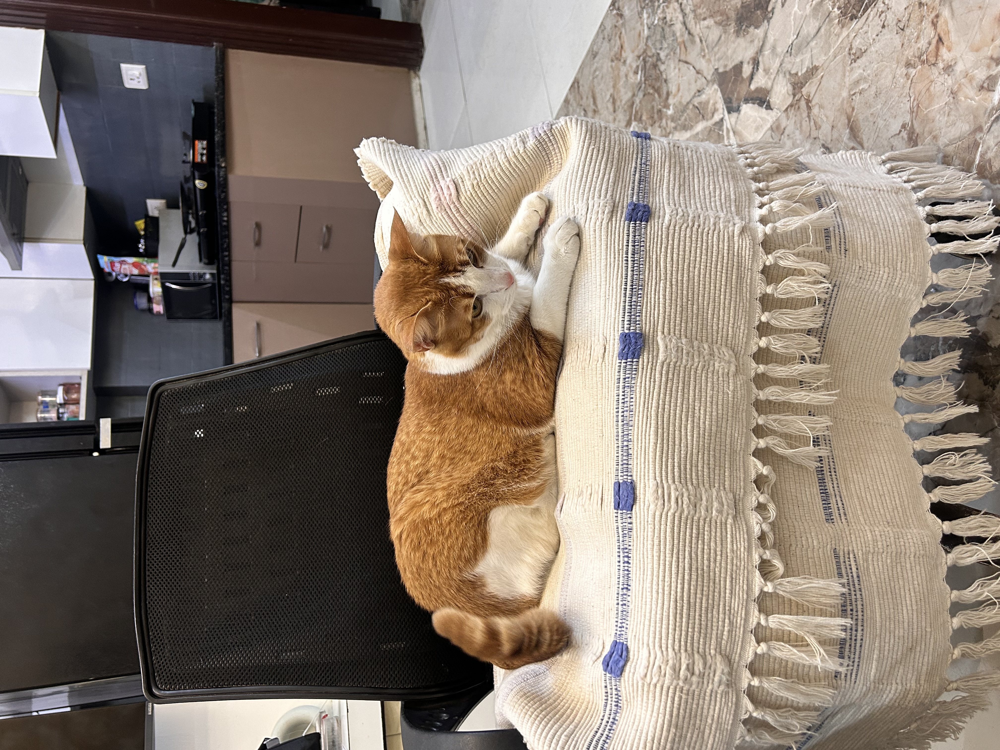

it is used to markup an abbreviation or acronym:
pookiewas founded in 2020
Cats formed a mutually beneficial relationship with people, and some scientists argue that cats domesticated themselves.
2 Especially prized as mousers on ships, cats traveled with people around the globe:
Did you know that not even a century ago, few cats lived entirely indoors at all? In fact, for more than 10,000 years, cats have lived outdoor lives, sharing the environment with birds and wildlife. Understanding cats’ place in history and human evolution reveals how very recently domestic cats came indoors and how millions of this species who we call community cats—continue to live healthy lives outdoors today, as all domestic cats are biologically adapted to do.
to indicate input that is typically enterd via the keyboard use the kbd element
use ctrl+pto print dialog box